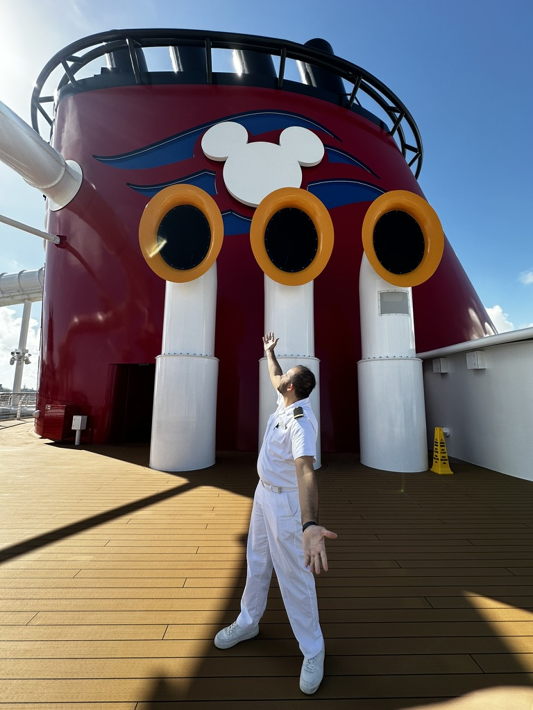
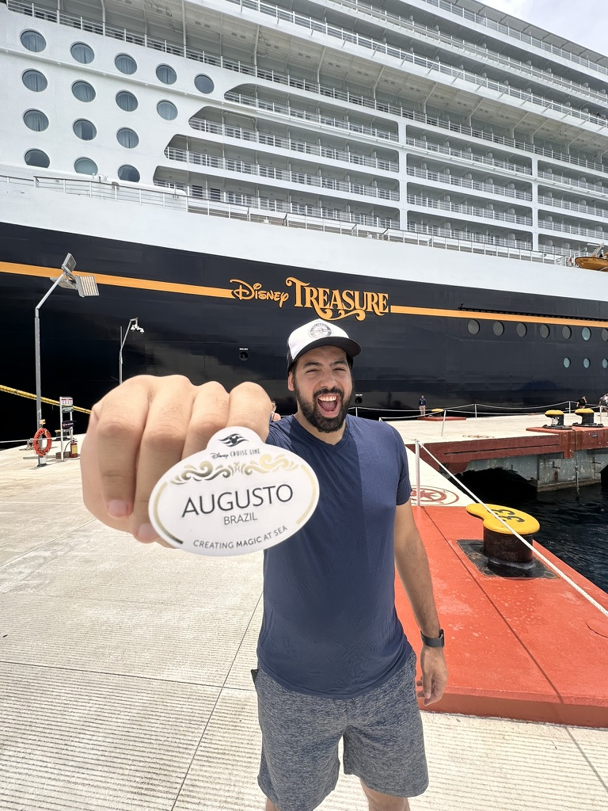
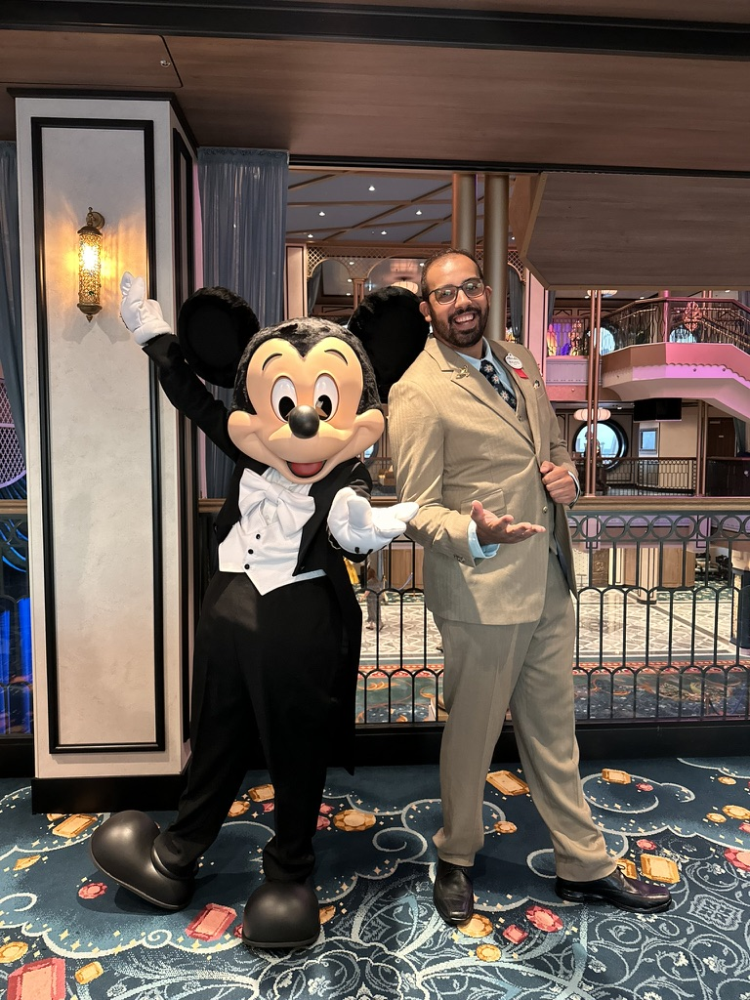
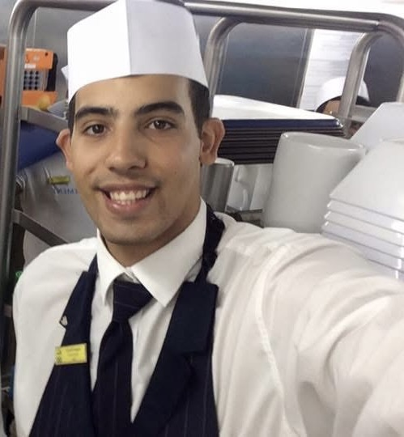

“Meu inglês não é bom o suficiente.”
Você não precisa de fluência. Precisa se comunicar, entender instruções e manter a calma na frente do hóspede.
Consultoria e material prático para brasileiros que querem trabalhar a bordo de navios, do primeiro contato com a vaga até o embarque.



Você não precisa de fluência. Precisa se comunicar, entender instruções e manter a calma na frente do hóspede.
O travamento quase sempre vem da falta de respostas ensaiadas, não do vocabulário. Ensaiar muda isso.
Um roteiro organizado, do “hello” ao dia do embarque, faz diferença. É isso que você encontra abaixo.
Ganhando pouco, sem falar inglês e sem nenhuma perspectiva. Quando ouvi pela primeira vez sobre trabalho em navio, achei que não era pra mim. Mas embarquei. Literalmente.
A primeira vez foi difícil. Me senti perdido, sem apoio, com medo. Mas foi ali que minha vida virou. Passei a ganhar em dólar, viajei o mundo, cresci como pessoa e como profissional. E percebi que tudo muda quando alguém te mostra o caminho.
Foi por isso que nasceu a De Casa Pro Mundo: para ser o apoio que eu não tive.

Três princípios que guiam cada consultoria, do primeiro contato até a vaga.
Você sabe exatamente o que fazer em cada etapa do processo seletivo, sem achismo nem informação solta na internet.
Experiência de quem já passou por esse processo e sabe o que pesa de verdade para a empresa, da entrevista ao embarque.
Resultado prático: um currículo que passa, uma entrevista bem feita e uma vaga real, não só conselhos bonitos.
Aplicar não custa nada. Você conta sobre a sua história, eu conheço o seu perfil e a gente conversa para entender qual caminho faz mais sentido para você.
Preenche a aplicação com o seu momento atual e o que você quer conquistar a bordo.
Um bate-papo entre eu e você, sem custo, para entender o seu perfil e a vaga que faz sentido.
Eu mostro como posso ajudar e qual formato de acompanhamento faz mais sentido para você.
Sem custo para aplicar.
O guia prático para ser aprovado em navios de cruzeiro, mesmo sem ser fluente.
R$ 37
pagamento único, acesso ao guia completo
Quero estudar agora por R$ 37Compra segura pela plataforma de pagamento.
Não é decorar. É ouvir a frase com a sua própria voz até ela soar natural.
Mesmo com vergonha. Ouvir de volta mostra exatamente onde você trava.
A resposta sai direto em inglês, sem passar pelo português. Esse é o ponto da entrevista.
“Atendimento e atenção de primeira. Acredito que agora as dicas e os ajustes vão dar tudo certo.”
Fabrício“Só coisas boas a dizer do seu trabalho. Acredito que fez total diferença para eu embarcar mais preparada e segura.”
Rayssa“Na hora eu fui bem, nem travei nem fiquei procurando palavra. Me senti bem mesmo após a entrevista.”
WalbeteNão. O guia foi feito para quem não é fluente. O objetivo é que você se comunique bem, entenda as perguntas e responda com segurança.
Não necessariamente. O guia ensina como falar da sua experiência, mesmo que ela não seja da área de hospitalidade.
Após a confirmação do pagamento, o acesso é enviado pela própria plataforma de compra.
Não necessariamente. Depende do cargo que você busca. A consultoria começa pelo seu perfil e mostra por onde entrar.
Não. O guia e a consultoria preparam você para o processo seletivo, mas a contratação depende da empresa.
Um grupo aberto para quem está começando a pensar em trabalhar a bordo ou já está no caminho.
Descontos exclusivos para alunos e membros da comunidade.
Parceria em inglês para quem precisa melhorar a fluência para a entrevista e o dia a dia a bordo.